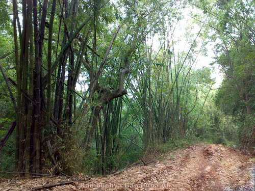
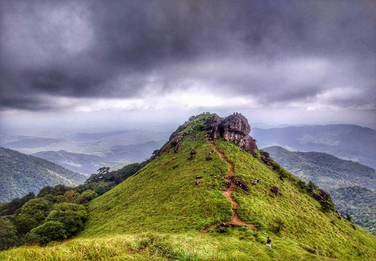

Malom Wildlife Sanctuary
This seldom explored wildlife sanctuary is one of the hidden Kasaragod attractions. The lush green hills of this sanctuary are the home of exotic flora and fauna. Tourists wishing to witness the rich wildlife of Molam can spot animals like elephants, bison, tigers, deer, and many more, may find this sanctuary a blissful place. Being home to more than 200 birds, this place is a heaven for birdwatchers.
...
...